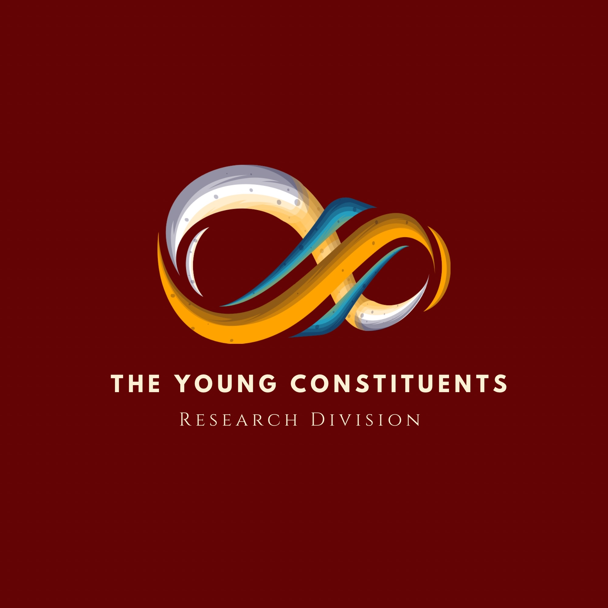

The Young Constituents - Research Division
I want to start this blog with an honest thought; for a long time, I didn't think of myself as a "researcher." That word felt like it belonged to people in lab coats or behind university podiums; not to a young person like myself trying to make sense of the world they were growing up in.
But somewhere along the way, I realized research isn't about the title. It's about the question. It's what happens the moment you stop accepting an issue at face value and start asking: why is this happening, who does it affect, and what does the evidence actually say?
That question is the reason the Research Division exists through The Young Constituents.
TYC is a place that is about giving youth real access, whether it may be to parliamentary experience, to events, to rooms they're often told they're too young to be in. The Research Division is an extension of that same belief, just pointed in a different direction. Instead of a seat at the table, we're handing people a pen and a page to write their thoughts on using hard facts.
Our goal for this? It is simple to say, but hard to do well: Taking the issues affecting youth in Canada and around the world; the ones that get flattened into headlines or reduced to hot takes, and make an effort to actually dig into them from a youth perspective. This would happen through data, and analysis. We want to explore misconceptions, and where an issue is genuinely complicated, we want to show why it's complicated instead of pretending it isn't. At least…that is the goal!
Here's what I've come to believe: Research is one of the few tools that gives a voice to people who don't want to shout to be heard.
Not everyone wants to stand at a podium or debate in a committee room. Some people process the world by reading, and writing, and following a thread of evidence until it leads somewhere true. Research lets you say something important without having to say it out loud first. It is quiet, but just as impactful and it's one of the most deliberate ways to take a stance. And there's something else research does that I didn't expect when I got into: it introduces you to people. Not in the traditional sense, you're not always sitting across from someone, but when you read someone's analysis, their sources, the angle they chose to take on a topic, you're getting a piece of how they see the world. Every research project our team puts out is not just a set of findings. It is someone's curiosity, translated into something the rest of us can learn from in an easy-to-understand form. That is what I want this division to be: a space where a group of young, sharp, curious minds can get genuinely deep into the issues they care about and are fun to explore, as well as where the act of doing that research is treated as just as valuable as any speech or event.
Now, this is just the beginning, our first post! There's a lot more coming. So… I do hope you'll stick around for what this division puts out next.